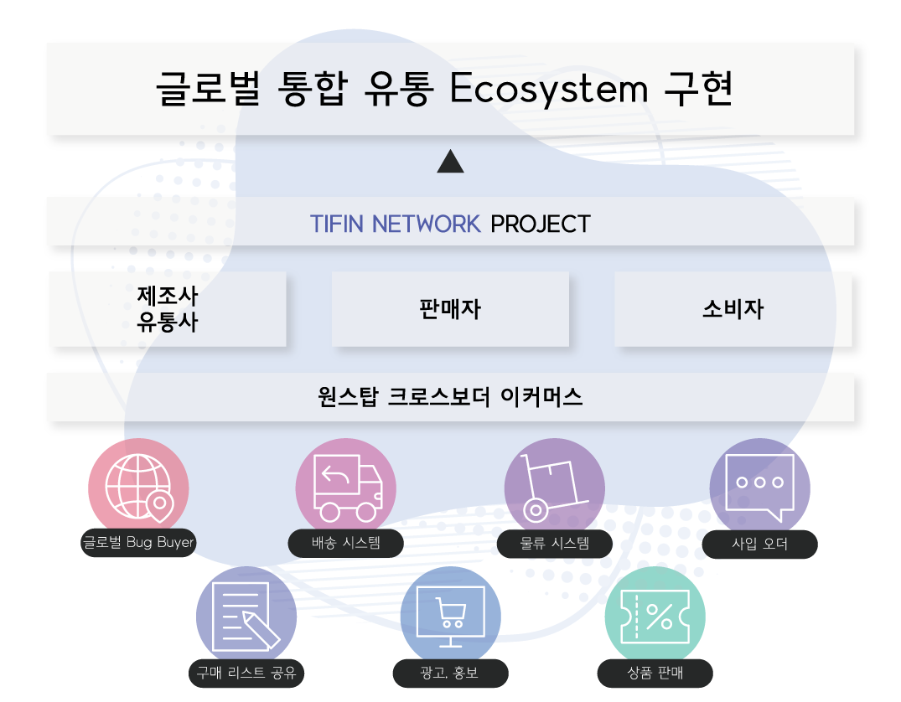

T-FIN NETWORK
글로벌 유통 서비스 플랫폼
TFIN NETWORK (TFIN NETWORK ) 프로젝트의 글로벌 유통 프로젝트는
기존의 글로벌 유통,
그 중 이커머스 시장에 관심을 두고 문제점을 블록체인 기술을
활용한 탈중앙화된 이커머스 시장과
글로벌 유통시장에서 새로운 시대를 열어가고자 한다.
About
TFIN NETWORK Project는 글로벌통합유통 생태계를만든다.
모든사용자는 TFIN NETWORK 자체 애플리케이션을 통해
쇼핑 뿐만 아니라 결제와 송금, 생활 서비스까지 편리하게 활용할 수 있다.
